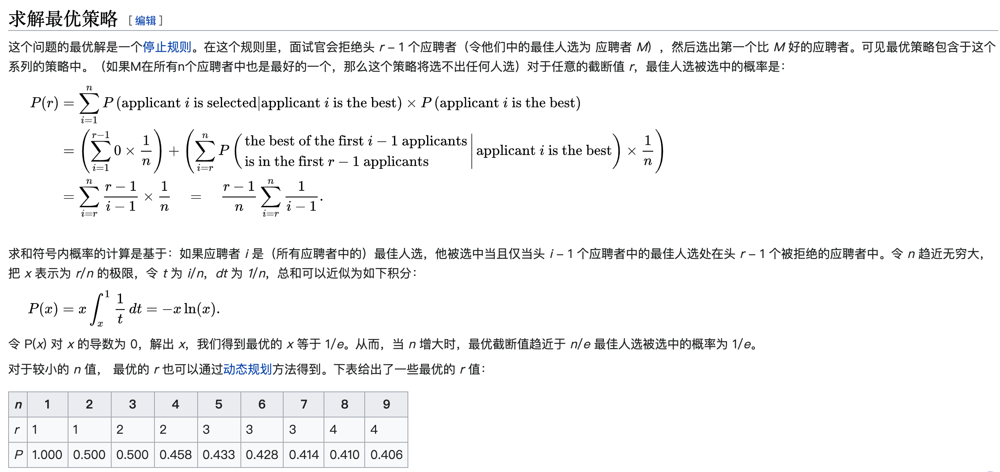

最大的钻石
题目
1 楼到 n 楼的每层电梯门口都放着一颗钻石，钻石大小不一。你乘坐电梯从 1 楼到 n 楼，每层楼电梯门都会打开一次，只能拿一次钻石，问怎样才能拿到「最大」的一颗？
参考答案
题中包含一个隐藏条件：随机放置。所有的分析都是基于随机放置给出的。换句话说，如果放置钻石是人为干预大小，那么本题的所以分析则全部不成立。
其实这个问题的原型叫做秘书问题，该类问题全部属于最佳停止问题。
这类问题都有着统一的解法：

所以到我们的题目里，我们也是可以直接给出答案：我们要选择先放弃前 37%（就是1/e）的钻石，此后选择比前 37% 都大的第一颗钻石。